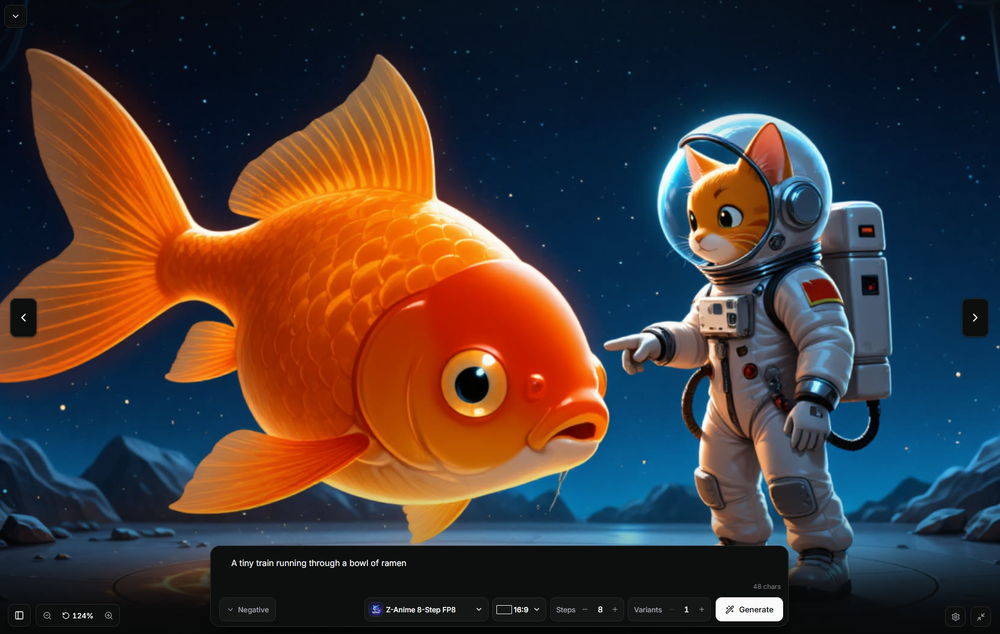
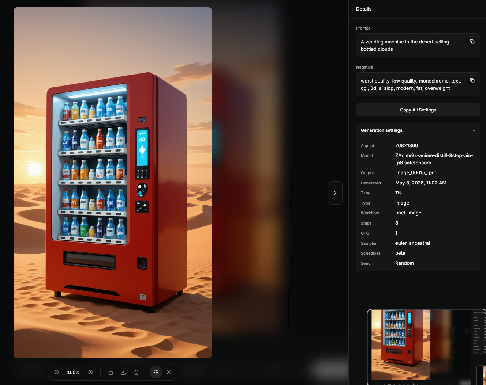

Prompt first
Write the prompt, then adjust model, size, steps, seed, sampler, and the useful generation controls.
Image and video generation
Run ComfyUI, open J AI Studio, and generate from a simpler page.
ComfyUI front end


Write the prompt, then adjust model, size, steps, seed, sampler, and the useful generation controls.
Controls change with the selected model and workflow, so incompatible settings stay out of the way.
See queue status, progress, previews, and cancel controls while ComfyUI is running the job.
Use a fullscreen prompt and output view when you do not need the full controls panel.
J AI Studio - FAQ
Answers to the practical setup questions.
COMFY_URL=http://127.0.0.1:8188
> npm run build
A simple browser UI for ComfyUI. It is for generating and reviewing outputs, not editing node graphs.
Node.js 20 or newer, plus a working ComfyUI install. The default ComfyUI URL is http://127.0.0.1:8188.
Generated media stays in your local ComfyUI output setup. Gallery metadata lives in J AI Studio's data folder.
Yes, if your ComfyUI setup has compatible video nodes and workflows installed.
Yes. Export a ComfyUI API workflow, add the J AI Studio control mapping, then import it from Settings.
Use Settings -> Update in a Git checkout. Manual update is git pull, npm install, npm run build, then restart.
Keep the node editor for setup. Use J AI Studio for the daily generation loop.